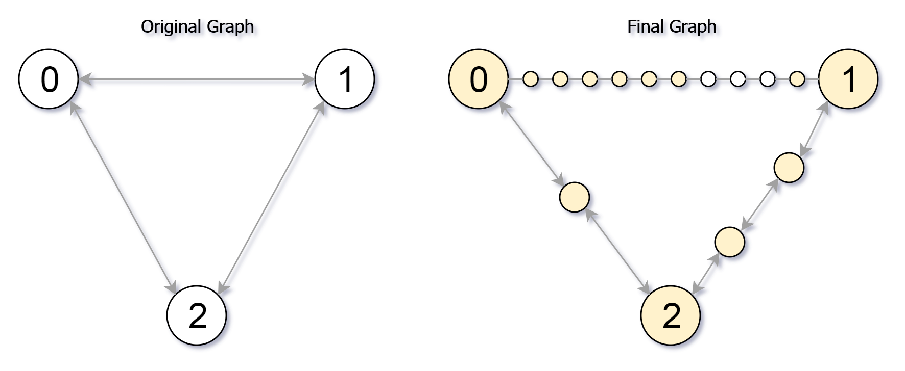

| Category | Difficulty | Likes | Dislikes |
|---|---|---|---|
| Algorithms | Hard | 885 | 227 |
phonepe
You are given an undirected graph (the "original graph") with n nodes labeled from 0 to n - 1. You decide to subdivide each edge in the graph into a chain of nodes, with the number of new nodes varying between each edge.
The graph is given as a 2D array of edges where edges[i] = [ui, vi, cnti] indicates that there is an edge between nodes ui and vi in the original graph, and cnti is the total number of new nodes that you will subdivide the edge into. Note that cnti == 0 means you will not subdivide the edge.
To subdivide the edge [ui, vi], replace it with (cnti + 1) new edges and cnti new nodes. The new nodes are x1, x2, ..., xcnti, and the new edges are [ui, x1], [x1, x2], [x2, x3], ..., [xcnti-1, xcnti], [xcnti, vi].
In this new graph, you want to know how many nodes are reachable from the node 0, where a node is reachable if the distance is maxMoves or less.
Given the original graph and maxMoves, return the number of nodes that are reachable from node 0 in the new graph.
Example 1:

Input: edges = [[0,1,10],[0,2,1],[1,2,2]], maxMoves = 6, n = 3
Output: 13
Explanation: The edge subdivisions are shown in the image above.
The nodes that are reachable are highlighted in yellow.Example 2:
Input: edges = [[0,1,4],[1,2,6],[0,2,8],[1,3,1]], maxMoves = 10, n = 4
Output: 23Example 3:
Input: edges = [[1,2,4],[1,4,5],[1,3,1],[2,3,4],[3,4,5]], maxMoves = 17, n = 5
Output: 1
Explanation: Node 0 is disconnected from the rest of the graph, so only node 0 is reachable.
Constraints:
0 <= edges.length <= min(n * (n - 1) / 2, 104)edges[i].length == 30 <= ui < vi < n0 <= cnti <= 1040 <= maxMoves <= 1091 <= n <= 3000